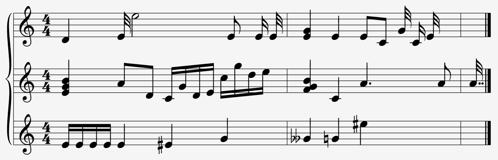
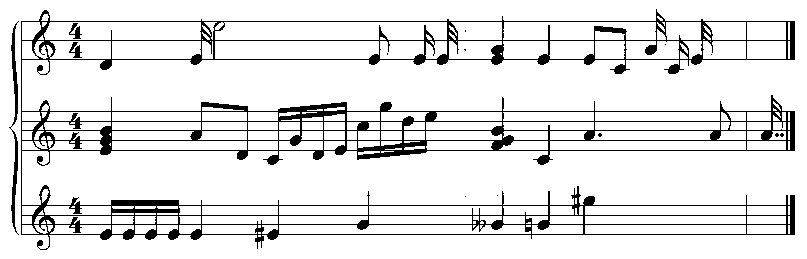
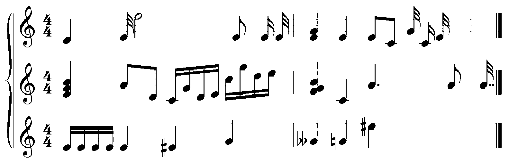
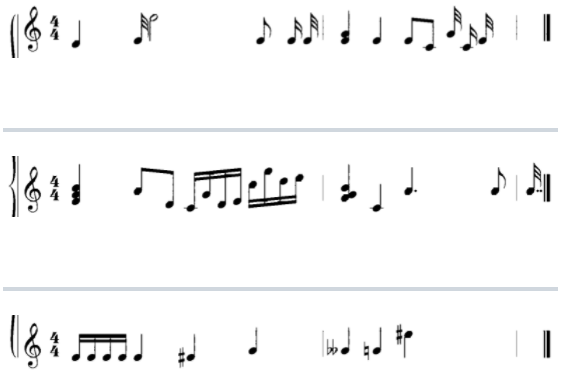
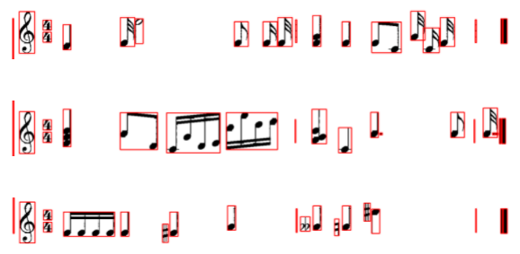
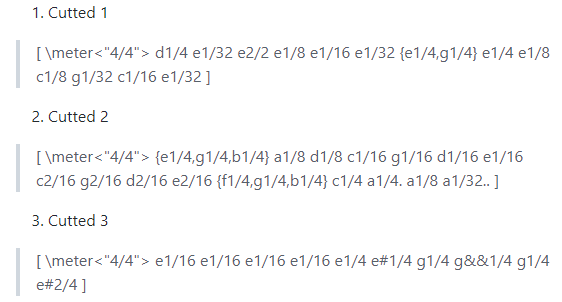

Here are a list of steps that Orchestra performs using computer vision and machine learning algorithms:
Noise Removal
The software takes an image file of a PDF of sheet music and removes any potential source of noise that
it can find, such as markings or discoloration not related to the music.

Binarization
The software takes the cleaned image file and converts it into only black and white colors so that it's
easier for the computer vision algorithm to parse through the file without having to deal with extra colors
(i.e. a gray background)

Staff Line Removal
Orchestra gets rid of the extraneous staff lines for further data processing.
The only things that the software cares about are the time signature, pitch of the notes, the note
durations, and the measure endings.

Cutted Buckets
From the removed staff lines, we break each line into separate arrays so that it's easier to iterate
through the song.

Segmentation and Detection
Here, the computer vision software detects the time signature, the rhythm of the notes, and the measure
bars in order to figure out when a line starts and ends.

Recognition
Finally, we see that the software has the capability to recognize which time signature the sheet music
indicates, the specific pitches of the notes appended with its note duration, and grouped notes within brackets
in order to denote chords. Orchestra is built to be able to recognize sharps and flats as well as dotted notes.
All of this information is outputted as multiple arrays depending on the number of lines in the sheet music.
